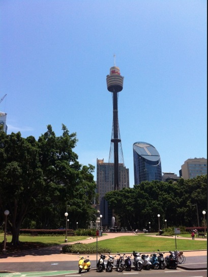

把最近拍的一些照片发一下
这是中国的军舰，其实总共有三艘，还有两艘拍不到。据说是刚从某个海域执行完护航任务顺道来悉尼访问
这是去爬悉尼海港大桥拍的
用铁丝网栏起来应该是怕有人跳桥自杀吧
在大桥上远眺歌剧院
远眺悉尼港北岸

看桥下的车水马龙
仔细看可以看到大桥钢梁的左侧有一队人在爬
游轮
天空中飞机喷出的“merry xmas”

Sydney
今天是来到悉尼的第一个周末，一个人闲着没事就出去逛逛，拍了一些照片。
这是悉尼的ANZAC纪念馆
圣玛利亚大教堂，圣诞要到了，门口摆出了耶稣出生时的场景
新南威尔士州立艺术馆
接下来是一些随拍

歌剧院和大桥
悉尼港停着的豪华邮轮，第一次见到那么大的船，泰坦尼克大概也就这么大吧
墨尔本动物园一日游
今天去了一直想去的墨尔本动物园，坐火车从city过去15分钟就到，感觉和悉尼的那个Taroonga Zoo差不多。
大野猪：
长颈鹿和斑马：
难得看到“活着”的考拉：
Emu或者叫鸸鹋，澳洲国徽上的动物：

销魂的姿势：
Meerkat，很可爱的小家伙，我记得《马达加斯加》里面有这么个动物：
哥俩好：
巨龟，爬的比我想像中的要快：
海豹:
小企鹅：
这里面总共有50只大象，为了纪念墨尔本动物园150周年。之前都摆在墨尔本街头，现在全放到这里来了：
一群丑小鸭和一只白天鹅：
Django CSRF Verification Failed
一直想做一个iOS应用推送服务，但是不想用PHP，于是就想到了用Django来写。所以最近一直都在照着Django Book的教程学习。在学到第七章表单的时候遇到了一个问题。我按照教程上的内容，做了一个表单但是一点提交就出现如下的错误。

于是Google了一番，网上是这么说的：
(1)在<form>里添加{% csrf_token %}：
<form action="." method="post">
{% csrf_token %}
<table>
{{ form.as_table }}
</table>
<input type="submit" value="Submit">
</form>
(2)然后在seetings.py中找到MIDDLEWARE_CLASSES并且添加上
'django.middleware.csrf.CsrfViewMiddleware',
'django.middleware.csrf.CsrfResponseMiddleware',
问题就能解决，但是我照做了之后发现以个更厉害的错误。提交表单之后，直接出现 A server error occurred. Please contact the administrator.于是我就开始瞎捣鼓，我把'django.middleware.csrf.CsrfResponseMiddleware',给去掉以后，上面的这个错误没了，但是还是有CSRF的那个错误。我仔细看了一下错误的说明，发现第二条里提到了RequestContext这么个东西，于是点进去到官网上看，发现在使用Context渲染Template的时候，如果涉及到表单操作则需要使用RequestContext而不是Context。于是照着光网上的例子修改了代码：
return render_to_response('contact_form.html', {'form':form})
要改成：
c = RequestContext(request, {
'form':form,
})
return render_to_response('contact_form.html', context_instance=c)
最终在views.py里应该是这样：
def contact(request):
if request.method == 'POST':
form = ContactForm(request.POST)
if form.is_valid():
cd = form.cleaned_data
return HttpResponseRedirect('/thanks/')
else:
form = ContactForm(
initial = {'subject':'I love this one!'}
)
c = RequestContext(request, {
'form':form,
})
return render_to_response('contact_form.html', context_instance=c)
再测试一下就没问题了。总结一下，在出现CSRF的错误时，第一步在<form>里添加{% csrf_token %}，第二步在render_to_response里使用RequestContext对象，通过这两部就能解决这个错误。
不解释，哈哈
今天一早起来在邮箱里发现的，不解释，哈哈！
EOI邀请信
今天收到了EOI的邀请信，大家来一睹尊容吧：

简单的UIView Animation
好几天没更新了，最近一直在学iOS的Quartz2D以及Animation。今天就来分享一下我的学习成果，基于UIView的动画是最简单易学的，一般一天的学习就能作出非常漂亮的动画了。接下来正式开始今天的内容。
先来简单介绍一下今天要实现的效果，我们要让一个小瓢虫在屏幕上转圈，并且在每次拐弯的时候把头转向要拐过去的方向。

首先新建一个SingleView的工程。然后拖一个Button和一个UIImageView到MainStoryboard。然后在ViewController.h里添加一下代码。
@property (nonatomic, strong) UIImageView *bug;
@property (nonatomic, strong) IBOutlet UIButton *startBtn;
-(IBAction)startAnimation;
然后在MainStoryboard里把这两个属性和IBAction联接到相应的控件。
接着下来我们开始做动画。第一步，要让小瓢虫掉个头（转180度）,方法如下：
- (void)faceRight:(NSString *)animationID finished:(NSNumber *)finished context:(void *)context
{
[UIView beginAnimations:nil context:nil];
[UIView setAnimationDuration:1.0];//设置动画持续时间
[UIView setAnimationCurve:UIViewAnimationCurveEaseInOut];//设置动画的样式
[UIView setAnimationDelegate:self];//设置代理，只有设置了代理下面那个方法才能在动画结束时被调用
[UIView setAnimationDidStopSelector:@selector(moveRight:finished:context:)];//动画结束时调用moveRight方法
bug.transform = CGAffineTransformMakeRotation(M_PI);//通过对象的transform属性来设置动画，在这里我们要让对象旋转180度即一个PI
[UIView commitAnimations];//提交动画
}
怎么样，代码并不复杂吧。然后我们在IBAction里面添加
- (IBAction)startAnimation
{
[self faceRight:nil finished:nil context:nil];
}
运行工程，然后点击按钮测试一下效果。下一步，我们要让小虫从当前位置移动到屏幕的右边。
- (void)moveRight:(NSString *)animationID finished:(NSNumber *)finished context:(void *)context
{
[UIView beginAnimations:nil context:nil];
[UIView setAnimationDuration:2.0];
[UIView setAnimationCurve:UIViewAnimationCurveEaseInOut];
[UIView setAnimationDelegate:self];
[UIView setAnimationDidStopSelector:@selector(faceDown:finished:context:)];
bug.center = CGPointMake(260, bugCenter.y);//改变对象的位置，通过center属性来改变
[UIView commitAnimations];
}
这个方法也没什么好解释的。接下去的几个方法都是依样画葫芦：
- (void)faceDown:(NSString *)animationID finished:(NSNumber *)finished context:(void *)context
{
[UIView beginAnimations:nil context:nil];
[UIView setAnimationDuration:1.0];
[UIView setAnimationCurve:UIViewAnimationCurveEaseInOut];
[UIView setAnimationDelegate:self];
[UIView setAnimationDidStopSelector:@selector(moveDown:finished:context:)];
bug.transform = CGAffineTransformMakeRotation(-M_PI_2);
[UIView commitAnimations];
}
- (void)moveDown:(NSString *)animationID finished:(NSNumber *)finished context:(void *)context
{
[UIView beginAnimations:nil context:nil];
[UIView setAnimationDuration:2.0];
[UIView setAnimationCurve:UIViewAnimationCurveEaseInOut];
[UIView setAnimationDelegate:self];
[UIView setAnimationDidStopSelector:@selector(faceLeft:finished:context:)];
bug.center = CGPointMake(260, 97 + 200);
[UIView commitAnimations];
}
- (void)faceLeft:(NSString *)animationID finished:(NSNumber *)finished context:(void *)context
{
[UIView beginAnimations:nil context:nil];
[UIView setAnimationDuration:1.0];
[UIView setAnimationCurve:UIViewAnimationCurveEaseInOut];
[UIView setAnimationDelegate:self];
[UIView setAnimationDidStopSelector:@selector(moveLeft:finished:context:)];
bug.transform = CGAffineTransformMakeRotation(0);
[UIView commitAnimations];
}
- (void)moveLeft:(NSString *)animationID finished:(NSNumber *)finished context:(void *)context
{
[UIView beginAnimations:nil context:nil];
[UIView setAnimationDuration:2.0];
[UIView setAnimationCurve:UIViewAnimationCurveEaseInOut];
[UIView setAnimationDelegate:self];
[UIView setAnimationDidStopSelector:@selector(faceTop:finished:context:)];
bug.center = CGPointMake(bugCenter.x, 297);
[UIView commitAnimations];
}
- (void)faceTop:(NSString *)animationID finished:(NSNumber *)finished context:(void *)context
{
[UIView beginAnimations:nil context:nil];
[UIView setAnimationDuration:1.0];
[UIView setAnimationCurve:UIViewAnimationCurveEaseInOut];
[UIView setAnimationDelegate:self];
[UIView setAnimationDidStopSelector:@selector(moveTop:finished:context:)];
bug.transform = CGAffineTransformMakeRotation(M_PI_2);
[UIView commitAnimations];
}
- (void)moveTop:(NSString *)animationID finished:(NSNumber *)finished context:(void *)context
{
[UIView beginAnimations:nil context:nil];
[UIView setAnimationDuration:2.0];
[UIView setAnimationCurve:UIViewAnimationCurveEaseInOut];
[UIView setAnimationDelegate:self];
[UIView setAnimationDidStopSelector:@selector(faceRight:finished:context:)];
bug.center = bugCenter;
[UIView commitAnimations];
}
然后我们运行测试一下，我们会发现刚开始的掉头和移动到右边没什么问题但是后面一个转头朝下的动画就有问题。小虫子在转得的时候又会回到出发点。这是什么原因呢，我也是在这个问题上纠缠了好久，后来才发现虽然我们给小虫子设置了IBOutlet，但是我们并不能通过bug.center来得到小虫的位置（总是返回（0，0））。我觉得这可能是使用了MainStoryboard的问题（具体原因我还在搜索中），于是我就在ViewDidLoad里添加如下代码，手动给小虫子定位。
- (void)viewDidLoad
{
self.bug = [[UIImageView alloc] initWithImage:[UIImage imageNamed:@"bug.png"]];
self.bug.frame = CGRectMake(30,30, 90, 75);
[self.view addSubview:self.bug];
bugCenter = bug.center;
[super viewDidLoad];
}
然后再运行一下就没有什么问题了。总结一下，UIViewAnimation很简单易用。只要记住在[UIView beginAnimations:nil context:nil]和[UIView commitAnimations]之间添加配置代码以及动画代码就行了。最后祝大家都能作出漂亮的动画效果。
City随拍
今天去国家艺术馆看拿破仑时期的艺术品展览。发一些一路上拍的照片


圣保罗大教堂


世界上最高的居民住宅楼88层

墨尔本的母亲河，雅拉河畔
 国家艺术馆
国家艺术馆


CoreData学习笔记
最近一段时间一直忙着投简历，主要方向当然是iOS的开发。在看了不下30家的招聘公司的要求之后，发现很多都要求应聘者了解或者掌握CoreData。所以今天就来学习下CoreData基础。我会用一个简单的project来介绍CoreData的基础知识。废话不多说，现在开始。
CoreData是为开发者提供的一种简单稳定的数据存储和读取的接口。相比起sqlite 3，它能使代码更简洁，运行效率更高。我们今天做的这个项目很简单，就是有这么两张表，第一章表叫StudentInfo，包含了学生姓名，年龄，性别，以及住址。第二章表叫AddressDetails，包含了街道名，城市名，省，和邮编。应该有人已经能看出来，这张表就是对应着第一张表里的住址。所以这两张表是一对一的关系。好了，如果我们用数据库的话，第一步肯定就是建表啦，然后还要敲一大堆SQL代码。我最烦SQL代码，因为很容易打错，尤其是语句很长的时候。CoreData就很好的帮我们解决了这个问题。请看：
第一步还是新建工程，为了方便我们这里直接选择Master-Detail Applications。项目名称就叫StudentManagementSystem吧， Class Prefix输入SMS，然后device选iPhone。

注意下面的方框要勾选前面三个：Use Storyboards, Use Core Data, Use Automatic Reference Counting。

接下来我们要先对工程做一些修改。首先删除以下4个文件，直接选择move to trash：
- SMSMasterViewController.h
- SMSMasterViewController.m
- SMSDetailViewController.h
- SMSDetailViewController.m
然后新建一个文件叫SMSMasterViewController，subclass选择UITableViewController，注意下面两个选项都不要勾选，然后确定。

在SMSMasterViewController.h里添加一个属性：
@property (nanotomic,strong) NSManagedObjectContext *managedObjectContext;
并且在.m里synthesize这个属性。接下去到MainStoryboard里选中DetailViewController并按Delete键删除。
好了现在打开SMSAppDelegate.h文件我们先来熟悉一些概念。可以看到上面有三个属性，类名分别是：
- NSManagedObjectContext
- NSManagedObjectModel
- NSPersistentStoreCoordinator
简单介绍下这三个类是什么：
- NSManagedObjectContext：相当于一张便签纸，把我们从数据库获取的所有objects记录在上面。我们编程的时候和这个类的对象打的交道最多，因为我们必须通过它来进行数据的插入，删除和修改等操作。
- NSManagedObjectModel：顾名思义，它代表了数据库里存储的数据的结构。它定义了存储数据包含了哪些属性，以及与其他数据之间的关系。xCode提供了一种很方便的可视化操作来设置这些结构。
- NSPersistentStoreCoordinator：它负责建立与数据库的联接。
我们下面就来看看xCode提供给我们的可视化编辑器，用来方便快捷的编辑我们想要的NSManagedObjectModel。在左边的工程目录里找到StudentManagementSystem.xcdatamodeld，点击它，并且在左下角的Editor Style里选到右边的那个选项。

我们先点选可视化编辑框里的那个已经存在的Entity，然后把它删掉。接下去我们一步步来添加一个Entity。点击Add Entity，然后命名为StudentInfo。

我们可以看到它包含了attributes和relationship两栏。接下来我们给它添加attributes，在图形化界面中选中这个Entity并且点击Add Attribute不放，在弹出菜单里选择Add Attribute。
 然后在图形界面里选中我们刚创建的Attribute，在右边的编辑区域里把Name改成name，把Attribute Type改成string。接着用同样的方法创建age和gender，注意age的type我们用Integer32。
然后在图形界面里选中我们刚创建的Attribute，在右边的编辑区域里把Name改成name，把Attribute Type改成string。接着用同样的方法创建age和gender，注意age的type我们用Integer32。

属性添加完毕后，接着依样画葫芦把另一个Entity，AddressDetails也创建好。完成后屏幕上应该是这样：

开头我们就说了，这两个entity（表）之间是一对一的关系，接下来我们就来创建这种关系。选中StudentInfo，点击Add Attribute不放，在弹出菜单里选择Add Relationship。把这个relationship改名为address，并且Destination选择AddressDetails。然后，因为苹果建议我们每当创建一个relationship的同时创建一个反向的relationship。选中AddressDetails添加Relationship改名为studentinfo，destination为StudentInfo，然后Inverse选择我们刚创建的address。完成后界面就是这样的：

下面一步，我们从测试中来学习CoreData的工作机制。首先我们添加几条数据，在AppDelegate里的application:didFinishLaunchingWithOptions方法里添加如下代码：
NSManagedObjectContext *context = self.managedObjectContext;
//创建NSManagedObject对象指向StudentInfo这个Entity，并设置Value。
NSManagedObject *studentInfo = [NSEntityDescription insertNewObjectForEntityForName:@"StudentInfo" inManagedObjectContext:context];
[studentInfo setValue:@"Eric" forKey:@"name"];
[studentInfo setValue:[NSNumber numberWithInt:25] forKey:@"age"];
[studentInfo setValue:@"male" forKey:@"gender"];
//创建NSManagedObject对象指向AddressDetails这个Entity，并设置Value。
NSManagedObject *addressDetails = [NSEntityDescription insertNewObjectForEntityForName:@"AddressDetails" inManagedObjectContext:context];
[addressDetails setValue:@"507/909 Swanston St." forKey:@"street"];
[addressDetails setValue:@"Melbourne" forKey:@"city"];
[addressDetails setValue:@"Victoria" forKey:@"state"];
[addressDetails setValue:[NSNumber numberWithInt:3053] forKey:@"zip"];
//添加两个对象之间的关系
[studentInfo setValue:addressDetails forKey:@"address"];
[addressDetails setValue:studentInfo forKey:@"studentinfo"];
//保存所创建的对象
NSError *error;
if(![context save:&error])
{
NSLog(@"Couldn't save: %@", [error localizedDescription]);
}
然后紧接着我们来测试一下是否能获取到刚才添加的这些值。接着刚才的代码往下写：
NSFetchRequest *fetechRequest = [[NSFetchRequest alloc] init];
NSEntityDescription *entity = [NSEntityDescription entityForName:@"StudentInfo" inManagedObjectContext:context];
[fetechRequest setEntity:entity];
NSArray *fetechedResults = [context executeFetchRequest:fetechRequest error:&error];
for(NSManagedObject *stuInfo in fetechedResults)
{
NSLog(@"Name:%@", [stuInfo valueForKey:@"name"]);
NSLog(@"age:%@", [stuInfo valueForKey:@"age"]);
NSManagedObject *address = [stuInfo valueForKey:@"address"];
NSLog(@"City:%@", [address valueForKey:@"city"]);
NSLog(@"Zip:%@", [address valueForKey:@"zip"]);
}
阅读上面的代码我们可以发现，我们不仅能获取到StudentInfo这个Entity里的值还能通过我们刚才创建的relationship，获取AddressDetails这个Entity，非常的方便。接下来我们运行一下看看结果，注意这时候模拟器上不会有任何的显示，我们要看Log里的输出。OK，结果正确。

到目前为止，我们用的都是NSManagedObject的对象来描述我们的Entity，其实还有一个更好的办法就是为每个Entity创建Model。xCode同样提供了非常方便的方法来达到这个目的。回到StudentManagementSystem.xcdatamodeld，选中StudentInfo这个Entity然后在顶上的菜单栏里选择File->New File->Core Data->NSManagedObject subclass。然后确定，xCode就为我们创建好了一个Model。重复同样的步骤为AddressInfo也创建Model。

接下来找到StudentInfo.h我们发现里面有个property还是NSManagedObject对象，这是因为我们在创建StudentInfo这个Model的时候AddressDetails这个Model还不存在，所以系统不知道它的类型，只能把它归为NSManagedObject的对象。很简单，我们重新创建一个StudentInfo的Model并且覆盖原来的就可以了。
接下来我们把刚才上面贴的两段代码改成下面的：
NSManagedObjectContext *context = self.managedObjectContext;
//创建NSManagedObject对象指向StudentInfo这个Entity，并设置Value。
StudentInfo *studentInfo = [NSEntityDescription insertNewObjectForEntityForName:@"StudentInfo" inManagedObjectContext:context];
studentInfo.name = @"Eric";
studentInfo.age = [NSNumber numberWithInt:25];
studentInfo.gender = @"male";
//创建NSManagedObject对象指向AddressDetails这个Entity，并设置Value。
AddressDetails *addressDetails = [NSEntityDescription insertNewObjectForEntityForName:@"AddressDetails" inManagedObjectContext:context];
addressDetails.street = @"507/909 Swanston St.";
addressDetails.city = @"Melbourne";
addressDetails.state = @"Victoria";
addressDetails.zip = [NSNumber numberWithInt:3053];
//添加两个对象之间的关系
studentInfo.address = addressDetails;
addressDetails.studentinfo = studentInfo;
//保存所创建的对象
NSError *error;
if(![context save:&error])
{
NSLog(@"Couldn't save: %@", [error localizedDescription]);
}
NSFetchRequest *fetechRequest = [[NSFetchRequest alloc] init];
NSEntityDescription *entity = [NSEntityDescription entityForName:@"StudentInfo" inManagedObjectContext:context];
[fetechRequest setEntity:entity];
NSArray *fetechedResults = [context executeFetchRequest:fetechRequest error:&error];
for(StudentInfo *stuInfo in fetechedResults)
{
NSLog(@"Name:%@", stuInfo.name);
NSLog(@"age:%@", stuInfo.age);
AddressDetails *address = studentInfo.address;
NSLog(@"City:%@", address.city);
NSLog(@"Zip:%@", address.zip);
}
接着运行下看看结果：

OK，两条输出，没有任何问题。接下来大家可以自己添加一个TableView的输出把数据库里的数据逐条显示在TableView里，这里我就不做了。今天的学习到此结束。
不平凡的一天
今天一大早7点不到就起来，吃完早饭就出发。还好家里住的地段好，直接火车坐到sourthern cross然后坐skybus到机场。结果坑爹的事情来了，我订的10点航班取消了（发誓以后再也不坐Tiger的航班了，乘客少就取消），心里一阵紧张，还好后面的那一班航班有位置。然后立马要求给我改到11点50分那一班。时间算算非常紧张，在机场里一直坐立不安。结果飞机还晚点起飞，出了机场已经1点20分了，还有40分钟就要面试了。赶快出了机场就冲向火车站，到了面试的地方正好2点钟。面试过程很简单，就做一份卷子5道题，三道概念两道编程。概念题都是直接现场Google的，编程题就不说了，没啥大问题。做完后，公司的人问了我的期望薪水以及什么时候乐意开始工作，然后就说两天内就能给我答复。出来后感觉很不错，看他们的态度似乎对我挺感兴趣，哈哈。今天算是人生中的一个里程碑吧，就发张我在悉尼街头随手拍的“里程碑”。